切換遊戲版本2026-06-18
涅奧
復生之母（被放逐）
第 1 幕 · 28 件遺物
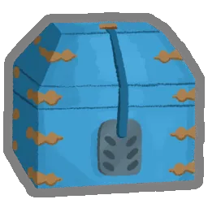
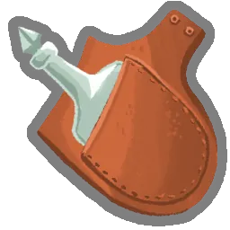
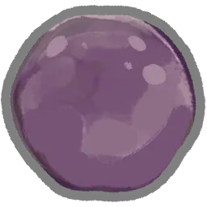
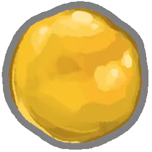
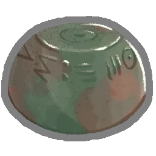
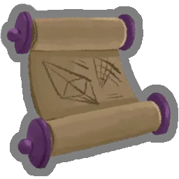
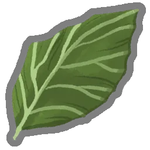
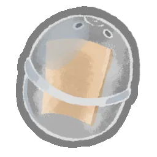
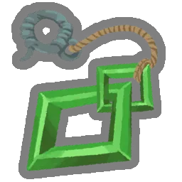
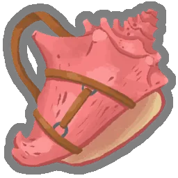
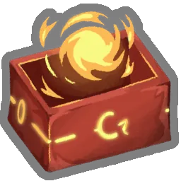
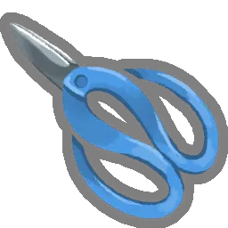
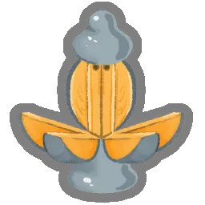
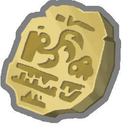
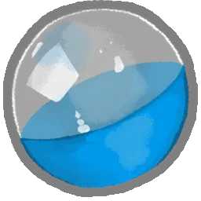
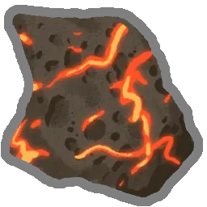
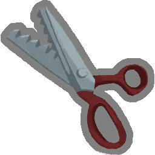
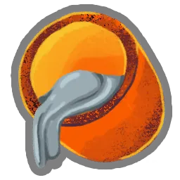
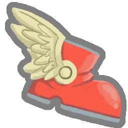
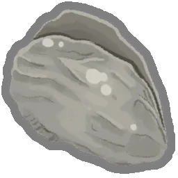
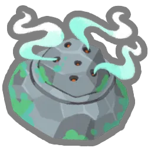
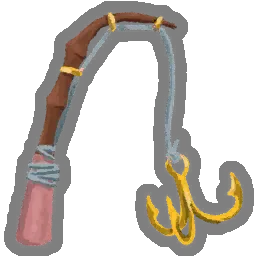
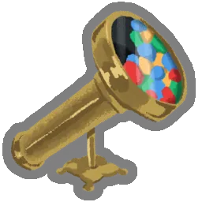
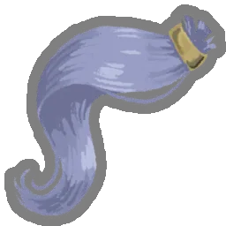
達弗
囤積者
任何一幕 · 8 件遺物
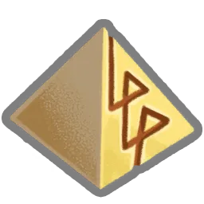
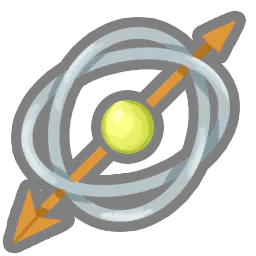
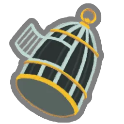
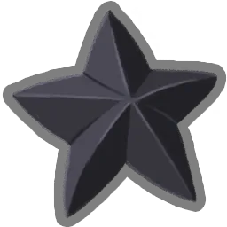
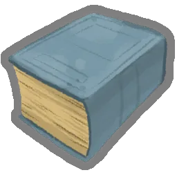
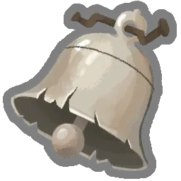
歐洛巴斯
活體虹光
第 2 幕 · 10 件遺物
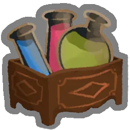
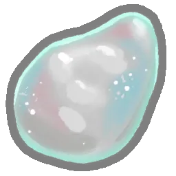
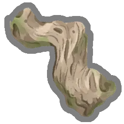
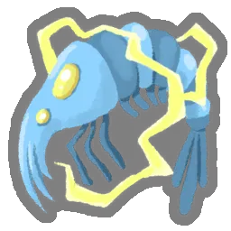
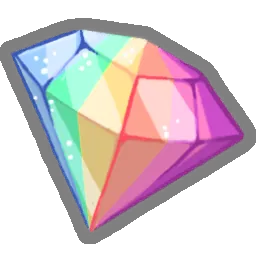
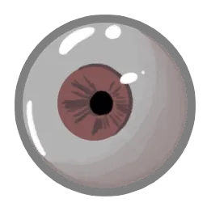
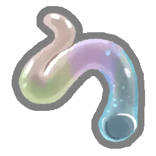
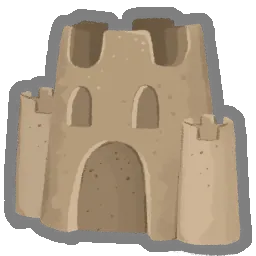
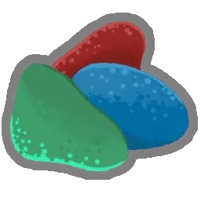
佩爾
融化巨龍
第 2 幕 · 10 件遺物
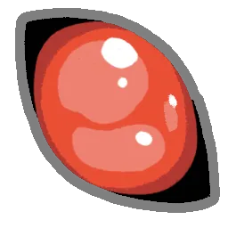
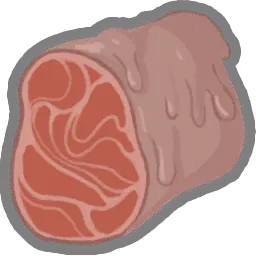
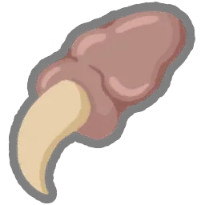
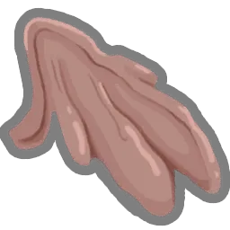
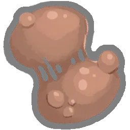
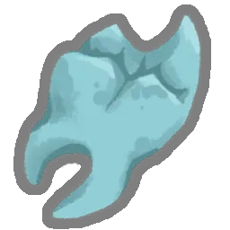
特茲卡塔拉
飼火者
第 2 幕 · 10 件遺物
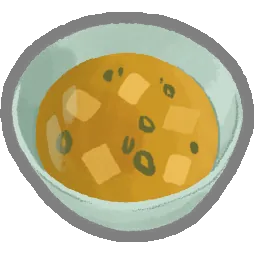
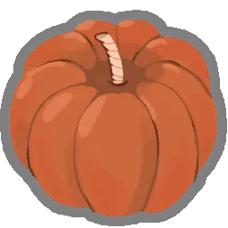
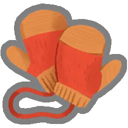
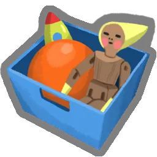
諾奴佩普
機緣的化身
第 3 幕 · 10 件遺物


坦克斯
嵌合獸之王
第 3 幕 · 10 件遺物
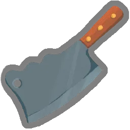
瓦庫
第一個惡魔
第 3 幕 · 10 件遺物